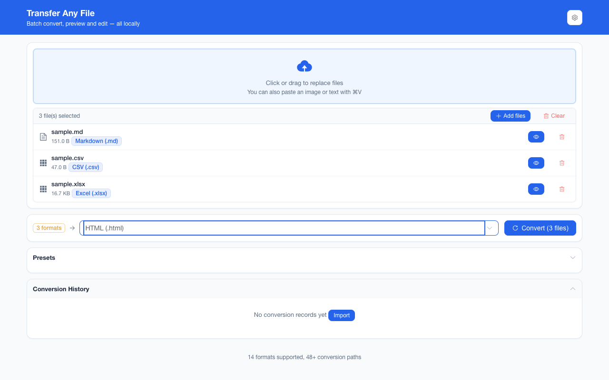

离线 · 无上传 · 浏览器本地完成Offline · no uploads · runs in the browser
JPEG（JPG）转 PNG——本地重编码成无损容器，不上传Convert JPEG (JPG) to PNG locally — a lossless container, nothing uploaded
这两者的差别不在「清不清楚」，而在「还能不能再存一次」：JPEG 每被保存一次就再丢一层信息，PNG 不会。所以常见的工作流是把照片从 JPEG 拿出来，放进一个可以反复编辑的容器里。这条链路做的正是这件事——解码到画布、再从画布编码，画布里只有像素，所以原文件里的 EXIF、GPS、拍摄时间、相机型号、缩略图一律不会出现在结果里。这一点对隐私是加分，对「我要留住拍摄信息」是减分，两者都该在转之前知道。另外要说清：无损不等于变小，照片进 PNG 通常是涨的。The difference is not about sharpness but about how many times a file can still be saved: every JPEG re-save discards another layer, a PNG does not. So the common workflow takes a photo out of JPEG and puts it in a container that can be edited repeatedly. That is exactly what this route does — decode onto a canvas, encode from it — and a canvas holds pixels and nothing else, so the EXIF, GPS, capture timestamp, camera model and thumbnail in the source never appear in the result. That is a gain for privacy and a loss if you needed the shooting data, and both are worth knowing before you convert. One more thing to say plainly: lossless is not smaller — a photograph in PNG usually gets bigger.

这条链路怎么走How the route runs
JPEGJPEG PNGPNG
共 1 步，由扩展的路径搜索自动选出，中间产物不落盘。1 step, chosen by the extension's own path search; intermediate results never touch the disk.
会保留什么What carries over
- 重编码进无损容器：此后反复导出 PNG 不会每存一次再掉一层细节A re-encode into a lossless container: every later PNG save stops costing you detail
- 像素尺寸原样保留，只有你显式设了「最长边」（面板档位 800–4096 px）才缩放Pixel dimensions carried over as they are — it only shrinks if you set the longest edge yourself (the dial offers 800–4096 px)
- .jpg 与 .jpeg 两种后缀都认，同一批里混着别的来源格式也行Both .jpg and .jpeg are recognised, and a batch may mix source formats
- 单个文件失败只报该文件，批次里其余继续——不会因为一张坏图整批停住One bad file reports only itself while the rest of the batch continues; a broken picture never halts the run
- 整条链路在你自己的标签页里跑：不上传、不发请求，断网也一样能转The whole route runs in your own tab: nothing is uploaded, no request is made, and it works with the network off
如实说明的限制What it does not do
- 体积通常变大：PNG 对照片这类内容没有魔法，真要「看着一样但更小」请走 WebP 或调 JPEG 质量The file usually gets bigger: PNG has no magic for photographs, so for “looks the same but smaller” take the WebP route or dial the JPEG quality instead
- EXIF、GPS、拍摄时间、相机型号、缩略图都不带过去——画布里只有像素，产物里也只有像素EXIF, GPS, the capture timestamp, camera model and thumbnail do not travel — a canvas holds pixels, and the artifact holds pixels
- 不修复任何东西：JPEG 的块状伪影与色带都在像素里，转成 PNG 只是把它们无损地保留下来Nothing is repaired: JPEG blocking and banding already live in the pixels, and PNG keeps them losslessly
- 画布按每通道 8 位的标准画布处理，源文件的 ICC 与宽色域标记不保证原样写进产物The canvas is the standard 8-bit-per-channel one, so an ICC profile or a wide-gamut tag is not promised to survive into the output
实操提示Working with it
- PNG 没有质量档，所以这条链路的目标面板只给「最长边」；质量与目标体积是为 JPEG / WebP 准备的PNG has no quality dial, so the output panel for this route offers only the longest edge — quality and target size belong to JPEG and WebP
- 结果文件名默认在源名后加日期与时间（模板可在偏好设置里改）；一批最多 200 张，产物可一次打包成 ZIPNames default to the source name plus date and time — the pattern is editable in preferences; up to 200 images per batch, downloadable as one ZIP
常见问题Questions people actually ask
为什么转出来的 PNG 比原图大很多？Why is the PNG so much bigger than the JPEG?
因为容器的职责变了：JPEG 用「丢细节」换体积，PNG 不用。想要体积小、观感接近，请走 WebP（同为有损但压得更紧），或留在 JPEG 并调质量。The container changed jobs: JPEG trades detail for size and PNG does not. For a smaller file that still looks close, take WebP (lossy but tighter) or stay on JPEG and dial the quality.
转换会去掉 EXIF 吗？Does the conversion strip EXIF?
会，全部去掉，包括 GPS。这条链路是「解码成像素 → 重新编码」，中间没有任何元数据通道。如果你需要拍摄信息，请先自己备份原文件。All of it, GPS included: the route is decode-to-pixels-then-re-encode, and there is no metadata channel in between. Back up the original first if you need the shooting data.
再转回 JPEG 能恢复原样吗？Can converting back to JPEG undo it?
不能。原 JPEG 的解码结果进了 PNG 是无损的，但「原来那张 JPEG 的字节」已经不存在了，重新编码是一次全新的有损压缩。No. The decoded pixels sit in PNG losslessly, but the original JPEG stream is gone, and re-encoding is a fresh lossy pass, not a restore.
不需要账号，也不需要联网：装好扩展后点图标，在新标签页里打开工作台，文件从磁盘直接选。No account and no network: install the extension, click its icon, and the workbench opens in a new tab reading straight off your disk.